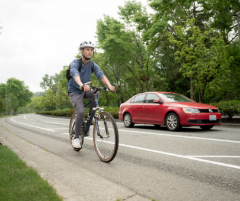

Welcome Smart Trip Coordinators!
We appreciate you and your company for your participation in the Smart Trips program. We are here to help. Contact us any time for support, brainstorming, technical assistance or just to chat. We love hearing your success stories. Reach out to Blanche, Smart Trips Business Coordinator at blanche@wcog.org or 360-685-8387.
Resources for Smart Trips Coordinators
- Employee List
- Run a Report
- Instructions for Issuing a First Time Riders Pass
- Smart Trips Coordinator Toolkit
Employee List
What do I do with the Employee List?
- See who at your company is signed up
- Request an employee bus pass
- Remove an employee from your list
- Print the list for reference
Run a Report
How do I run a report? It's easy!
- Choose your report options including date range, trip purpose, trip mode, and number of trips taken.
- Click on Run a Report button
- The report will appear. You may either print directly from the screen or download to Excel.
- To print a formatted report just click on the grey Print Report button at the bottom of the page. The page that prints is ready to display.
Why should I run a report?
See who your Smart Trip makers are. These people can be great ambassadors for the program.
Find a bike or bus buddy for another employee. Select bus or bike as the Trip Mode and see who your riders are. You could then contact them about supporting another rider.
Run an in-house promotion! You can run a one-off promotion or run them on a regular basis.
Encourage employees to start logging their trips. Run a report to see who your regular Smart Trip makers are, promote the program, then run another report in a week or two to see who signed up. You could even send them all a coffee card or prize for signing up. Or give them a shout out!
Run a promotion for a particular month, like Bike Month in May!
Choose a different Trip Mode each season to celebrate your walkers, bicyclists, bussers and ridesharers.
Looking for a rideshare for someone? Start with finding out who your ridesharers are. Maybe they have room for another rider.
Run a report to find out who isn’t a bus rider and send them a free 6-ride pass (just ask the Smart Trips office for these to give away).
Instructions for Issuing a Free First Time Riders Pass
Remember these passes are only for people new to riding WTA. Passes are good for unlimited rides for 31 days from the first day it is used.
It is easy for you to request this one-time free 31-day pass (worth $30.00) for your employees.
- Go to your Employee List.
- Find the name of your employee wanting a pass in your list of participants. If they aren’t on your employee list, have them set up a Smart Trips account or have them check to make sure they have the correct employer listed on their Smart Trips account.
- Click the button Request Bus Pass. If they have a green Approved button then they have already received a bus pass from us. If they have Regular Rider button then they already have bus trips logged into their Smart Trips account and they don’t qualify as a new rider.
- We will send the pass directly to their house using the address in their Smart Trips account. Confirm their mailing address in their Smart Trips account is correct and includes an apartment number if needed!
- Give them a WTA transit guide or go to ridewta.com and help them figure out their bus route to work. An individual will only be sent this pass one time. And remember Smart Trips is here to help if you aren’t sure about helping them plan their route.
Please call or email if you have any troubles or questions: blanche@wcog.org or 360-685-8387.